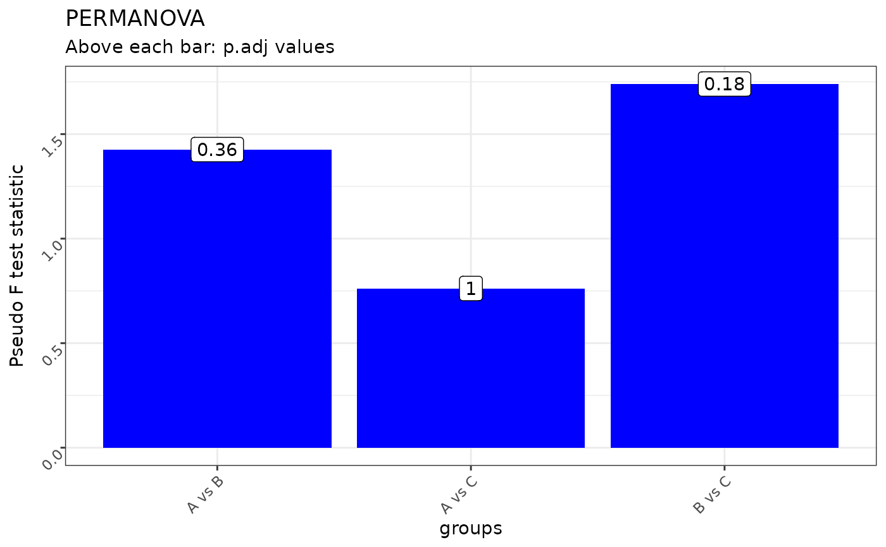
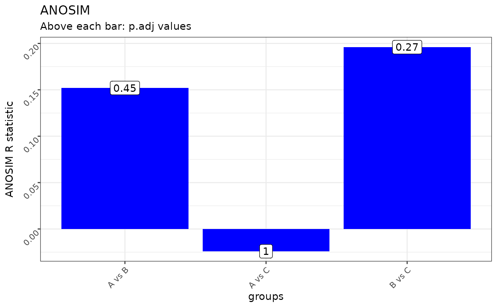

Creates a pairwise stats plot from pairwise_adonis or pairwise_anosim results.
This function is built into the class omics with method ordination() and inherited by other omics classes, such as;
metagenomics and proteomics.
Usage
plot_pairwise_stats(
data,
stats_col,
group_col,
label_col,
y_axis_title = NULL,
plot_title = NULL
)Arguments
- data
A data.frame or data.table.
- stats_col
A column name of a continuous variable.
- group_col
A column name of a categorical variable.
- label_col
A column name of a categorical variable to label the bars.
- y_axis_title
A character variable to name the Y - axis title (default: NULL).
- plot_title
A character variable to name the plot title (default: NULL).
Value
A ggplot2 object to be further modified
Examples
library("ggplot2")
# Create random data
set.seed(42)
mock_data <- matrix(rnorm(15 * 10), nrow = 15, ncol = 10)
# Create euclidean dissimilarity matrix
mock_dist <- dist(mock_data, method = "euclidean")
# Define group labels, should be equal to number of columns and rows to dist
mock_groups <- rep(c("A", "B", "C"), each = 5)
# Compute pairwise adonis
adonis_res <- pairwise_adonis(x = mock_dist,
groups = mock_groups,
p.adjust.method = "bonferroni",
perm = 99)
# Compute pairwise anosim
anosim_res <- pairwise_anosim(x = mock_dist,
groups = mock_groups,
p.adjust.method = "bonferroni",
perm = 99)
# Visualize PERMANOVA pairwise stats
plot_pairwise_stats(data = adonis_res,
group_col = "pairs",
stats_col = "F.Model",
label_col = "p.adj",
y_axis_title = "Pseudo F test statistic",
plot_title = "PERMANOVA")

# Visualize ANOSIM pairwise stats
plot_pairwise_stats(data = anosim_res,
group_col = "pairs",
stats_col = "anosimR",
label_col = "p.adj",
y_axis_title = "ANOSIM R statistic",
plot_title = "ANOSIM")
